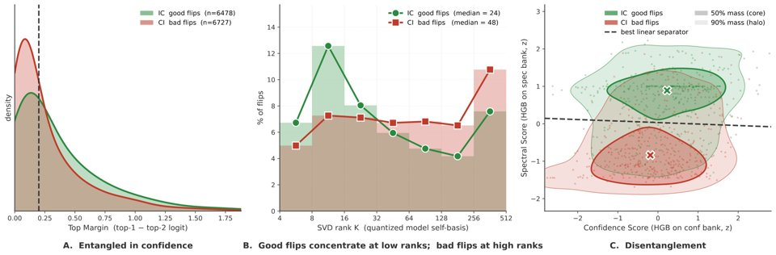

NeurIPS 2026 · Main Conference Paper
Disentangling the Good From the Bad: Quantization-Induced Flips Are Not Random
Good and bad prediction flips separate along the SVD rank of the quantized model's own feature space, so a post-hoc gate can keep the good flips and repair the bad ones.